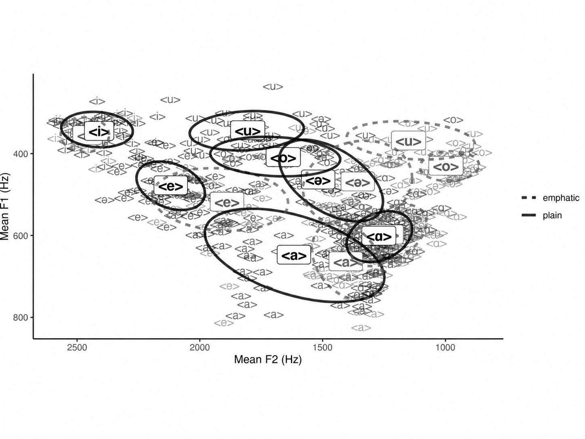

Vowel Harmony in Lishan Didan (Journal of Jewish Languages, accepted)
Recordings and data analysis here: GitHub
Lishan Didan (also known as Jewish Urmi) is an endangered variety of Neo-Aramaic spoken in northwestern Iran. In this project, I worked with native speakers to investigate the acoustics of the language’s vowel system. I was able to document all the attested vowels in the language and submitted my work to the Journal of Jewish Languages. The paper was accepted and is in press.
Listen to Lishan Didan
batole
“to empty”
buz
“ice”
gori
“they will enter”
